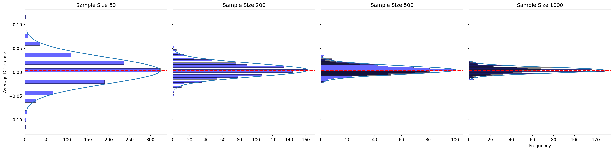

Code
# import sys;
# print(sys.executable)# import sys;
# print(sys.executable)The data set contains 50,083 observations and 51 variables. The key variables are as follows:
| Variable | Description |
|---|---|
treatment |
Treatment |
control |
Control |
ratio |
Match ratio |
ratio2 |
2:1 match ratio |
ratio3 |
3:1 match ratio |
size |
Match threshold |
size25 |
$25,000 match threshold |
size50 |
$50,000 match threshold |
size100 |
$100,000 match threshold |
sizeno |
Unstated match threshold |
ask |
Suggested donation amount |
askd1 |
Suggested donation was highest previous contribution |
askd2 |
Suggested donation was 1.25 x highest previous contribution |
askd3 |
Suggested donation was 1.50 x highest previous contribution |
ask1 |
Highest previous contribution (for suggestion) |
ask2 |
1.25 x highest previous contribution (for suggestion) |
ask3 |
1.50 x highest previous contribution (for suggestion) |
amount |
Dollars given |
gave |
Gave anything |
amountchange |
Change in amount given |
hpa |
Highest previous contribution |
ltmedmra |
Small prior donor: last gift was less than median $35 |
freq |
Number of prior donations |
years |
Number of years since initial donation |
year5 |
At least 5 years since initial donation |
mrm2 |
Number of months since last donation |
dormant |
Already donated in 2005 |
female |
Female |
couple |
Couple |
state50one |
State tag: 1 for one observation of each of 50 states; 0 otherwise |
nonlit |
Nonlitigation |
cases |
Court cases from state in 2004-5 in which organization was involved |
statecnt |
Percent of sample from state |
stateresponse |
Proportion of sample from the state who gave |
stateresponset |
Proportion of treated sample from the state who gave |
stateresponsec |
Proportion of control sample from the state who gave |
stateresponsetminc |
stateresponset - stateresponsec |
perbush |
State vote share for Bush |
close25 |
State vote share for Bush between 47.5% and 52.5% |
red0 |
Red state |
blue0 |
Blue state |
redcty |
Red county |
bluecty |
Blue county |
pwhite |
Proportion white within zip code |
pblack |
Proportion black within zip code |
page18_39 |
Proportion age 18-39 within zip code |
ave_hh_sz |
Average household size within zip code |
median_hhincome |
Median household income within zip code |
powner |
Proportion house owner within zip code |
psch_atlstba |
Proportion who finished college within zip code |
pop_propurban |
Proportion of population urban within zip code |
| treatment | control | ratio | ratio2 | ratio3 | size | size25 | size50 | size100 | sizeno | ... | redcty | bluecty | pwhite | pblack | page18_39 | ave_hh_sz | median_hhincome | powner | psch_atlstba | pop_propurban | |
|---|---|---|---|---|---|---|---|---|---|---|---|---|---|---|---|---|---|---|---|---|---|
| 0 | 0 | 1 | Control | 0 | 0 | Control | 0 | 0 | 0 | 0 | ... | 0.0 | 1.0 | 0.446493 | 0.527769 | 0.317591 | 2.10 | 28517.0 | 0.499807 | 0.324528 | 1.000000 |
| 1 | 0 | 1 | Control | 0 | 0 | Control | 0 | 0 | 0 | 0 | ... | 1.0 | 0.0 | NaN | NaN | NaN | NaN | NaN | NaN | NaN | NaN |
| 2 | 1 | 0 | 1 | 0 | 0 | $100,000 | 0 | 0 | 1 | 0 | ... | 0.0 | 1.0 | 0.935706 | 0.011948 | 0.276128 | 2.48 | 51175.0 | 0.721941 | 0.192668 | 1.000000 |
| 3 | 1 | 0 | 1 | 0 | 0 | Unstated | 0 | 0 | 0 | 1 | ... | 1.0 | 0.0 | 0.888331 | 0.010760 | 0.279412 | 2.65 | 79269.0 | 0.920431 | 0.412142 | 1.000000 |
| 4 | 1 | 0 | 1 | 0 | 0 | $50,000 | 0 | 1 | 0 | 0 | ... | 0.0 | 1.0 | 0.759014 | 0.127421 | 0.442389 | 1.85 | 40908.0 | 0.416072 | 0.439965 | 1.000000 |
| ... | ... | ... | ... | ... | ... | ... | ... | ... | ... | ... | ... | ... | ... | ... | ... | ... | ... | ... | ... | ... | ... |
| 50078 | 1 | 0 | 1 | 0 | 0 | $25,000 | 1 | 0 | 0 | 0 | ... | 0.0 | 1.0 | 0.872797 | 0.089959 | 0.257265 | 2.13 | 45047.0 | 0.771316 | 0.263744 | 1.000000 |
| 50079 | 0 | 1 | Control | 0 | 0 | Control | 0 | 0 | 0 | 0 | ... | 0.0 | 1.0 | 0.688262 | 0.108889 | 0.288792 | 2.67 | 74655.0 | 0.741931 | 0.586466 | 1.000000 |
| 50080 | 0 | 1 | Control | 0 | 0 | Control | 0 | 0 | 0 | 0 | ... | 1.0 | 0.0 | 0.900000 | 0.021311 | 0.178689 | 2.36 | 26667.0 | 0.778689 | 0.107930 | 0.000000 |
| 50081 | 1 | 0 | 3 | 0 | 1 | Unstated | 0 | 0 | 0 | 1 | ... | 1.0 | 0.0 | 0.917206 | 0.008257 | 0.225619 | 2.57 | 39530.0 | 0.733988 | 0.184768 | 0.634903 |
| 50082 | 1 | 0 | 3 | 0 | 1 | $25,000 | 1 | 0 | 0 | 0 | ... | 0.0 | 1.0 | 0.530023 | 0.074112 | 0.340698 | 3.70 | 48744.0 | 0.717843 | 0.127941 | 0.994181 |
50083 rows × 51 columns
<class 'pandas.core.frame.DataFrame'>
RangeIndex: 50083 entries, 0 to 50082
Data columns (total 51 columns):
# Column Non-Null Count Dtype
--- ------ -------------- -----
0 treatment 50083 non-null int8
1 control 50083 non-null int8
2 ratio 50083 non-null category
3 ratio2 50083 non-null int8
4 ratio3 50083 non-null int8
5 size 50083 non-null category
6 size25 50083 non-null int8
7 size50 50083 non-null int8
8 size100 50083 non-null int8
9 sizeno 50083 non-null int8
10 ask 50083 non-null category
11 askd1 50083 non-null int8
12 askd2 50083 non-null int8
13 askd3 50083 non-null int8
14 ask1 50083 non-null int16
15 ask2 50083 non-null int16
16 ask3 50083 non-null int16
17 amount 50083 non-null float32
18 gave 50083 non-null int8
19 amountchange 50083 non-null float32
20 hpa 50083 non-null float32
21 ltmedmra 50083 non-null int8
22 freq 50083 non-null int16
23 years 50082 non-null float64
24 year5 50083 non-null int8
25 mrm2 50082 non-null float64
26 dormant 50083 non-null int8
27 female 48972 non-null float64
28 couple 48935 non-null float64
29 state50one 50083 non-null int8
30 nonlit 49631 non-null float64
31 cases 49631 non-null float64
32 statecnt 50083 non-null float32
33 stateresponse 50083 non-null float32
34 stateresponset 50083 non-null float32
35 stateresponsec 50080 non-null float32
36 stateresponsetminc 50080 non-null float32
37 perbush 50048 non-null float32
38 close25 50048 non-null float64
39 red0 50048 non-null float64
40 blue0 50048 non-null float64
41 redcty 49978 non-null float64
42 bluecty 49978 non-null float64
43 pwhite 48217 non-null float32
44 pblack 48047 non-null float32
45 page18_39 48217 non-null float32
46 ave_hh_sz 48221 non-null float32
47 median_hhincome 48209 non-null float64
48 powner 48214 non-null float32
49 psch_atlstba 48215 non-null float32
50 pop_propurban 48217 non-null float32
dtypes: category(3), float32(16), float64(12), int16(4), int8(16)
memory usage: 8.9 MBTest months since last donation to see if the treatment and control group are statistically different at the 95% confidence level
\[H_0: \mu_{months\;treatment} = \mu_{months\;control} \] \[H_a: \mu_{months\;treatment} \neq \mu_{months\;control} \]
The t-value formula is given by:
\[ t_{\text{value}} = \frac{\bar{x}_{\text{1}} - \bar{x}_{\text{2}}}{\sqrt{\frac{s_{\text{1}}^2}{n_{\text{1}}} + \frac{s_{\text{2}}^2}{n_{\text{2}}}}} \]
I know there are serverals library that can automatically calculate the t values for us, but as structure, we will define the t_value using the formula in the class slides
def t_value(treatment, control):
# calculate x_bar
x_treatment = treatment.mean()
x_control = control.mean()
#calculate std
s_treatment = treatment.std()
s_control = control.std()
n_treatment = len(treatment)
n_control = len(control)
t_value = (x_treatment - x_control)/np.sqrt((s_treatment**2/n_treatment) + (s_control**2/n_control))
return t_valuet_value_months = t_value(months_treatment, months_control)
print(f"T_values is {round(t_value_months, 4)}")T_values is 0.1195The formula of degree of freedom is:
\[ df = \frac{(n_1 - 1)(n_2 - 1)}{(n_2 - 1)(\frac{\frac{s_1^2}{n_1}}{\frac{s_1^2}{n_1} + \frac{s_2^2}{n_2}})^2 + (n_1 - 1)(1 - \frac{\frac{s_1^2}{n_1}}{\frac{s_1^2}{n_1} + \frac{s_2^2}{n_2}})^2} \]
Define a fuction to find degree of freedom
def dof(treatment, control):
# calculate x_bar
x_treatment = treatment.mean()
x_control = control.mean()
#calculate std
s_treatment = treatment.std()
s_control = control.std()
n_treatment = len(treatment)
n_control = len(control)
# Find the degree of freedom
#Assign the complex formula in the denorminator to b
b = (s_treatment**2/n_treatment)/(s_treatment**2/n_treatment+s_control**2/n_control)
numerator = (n_treatment-1)*(n_control-1)
denominator = (n_control-1)*(b**2) + (n_treatment-1)*((1-b)**2)
degree_of_freedom = numerator/denominator
return degree_of_freedomdof_months = dof(months_treatment, months_control)
print(f"Degree of freedom is {round(dof_months, 2)}")Degree of freedom is 33394.14# Find p-value
p_value = (1-t.cdf(t_value_months, dof_months))*2
print(f"P_value is {round(p_value, 3)}")P_value is 0.905The independent t-test on the ‘mrm2’ variable (months since last donation) between the treatment and control groups yields a t-statistic of approximately 0.1195 and a p-value of 0.905.
Given the high p-value (much greater than the alpha level of 0.05), we fail to reject the null hypothesis, which suggests that there is no statistically significant difference in the mean number of months since the last donation between the treatment and control groups.
lr = rsm.model.regress(
data = data,
rvar = 'mrm2',
evar = 'treatment'
)
lr.coef.round(3)| index | coefficient | std.error | t.value | p.value | ||
|---|---|---|---|---|---|---|
| 0 | Intercept | 12.998 | 0.094 | 138.979 | 0.000 | *** |
| 1 | treatment | 0.014 | 0.115 | 0.119 | 0.905 |
The linear regression results are as follows:
The coefficient for treatment is approximately 0.014 with a standard error of about 0.115.
The t-statistic for the treatment coefficient is 0.119, and the p-value is 0.905.
These results are consistent with the independent t-test findings. The p-value in both analyses is much larger than the alpha level of 0.05, indicating no statistical significance. The t-statistic from the regression is the same as the t-statistic from the t-test, and the p-value confirms that there is no significant difference in the number of months since last donation (mrm2) between the treatment and control groups at the 95% confidence level.
Test the highest previous contribution to see if the treatment and control group are statistically different at 95% confidence level
\[H_0: \mu_{contribution\;treatment} = \mu_{contribution\;control} \] \[H_a: \mu_{contribution\;treatment} \neq \mu_{contribution\;control} \]
hpa_treatment = data.loc[data['treatment'] == 1,'hpa']
hpa_control = data.loc[data['treatment'] == 0,'hpa']
# Apply the t_values function that we defined above
t_value_hpa = t_value(hpa_treatment, hpa_control)
print(f"T_value is {round(t_value_hpa, 4)}")T_value is 0.9704#Apply the degree of freedom funcion that we defined above
dof_hpa = dof(hpa_treatment, hpa_control)
print(f"Degree of freedom is {round(dof_hpa, 2)}")Degree of freedom is 35913.89# Find p-value
p_value = (1-t.cdf(t_value_hpa, dof_hpa))*2
print(f"P_value is {round(p_value, 3)}")P_value is 0.332The independent t-test on the ‘hpa’ variable (highest previous contribution) between the treatment and control groups yields a t-statistic of approximately 0.9704 and a p-value of 0.332.
Given the high p-value (much greater than the alpha level of 0.05), we fail to reject the null hypothesis, which suggests that there is no statistically significant difference in the mean number of the highest previous contribution between the treatment and control groups.
lr = rsm.model.regress(
data = data,
rvar = 'hpa',
evar = 'treatment'
)
lr.coef.round(3)| index | coefficient | std.error | t.value | p.value | ||
|---|---|---|---|---|---|---|
| 0 | Intercept | 58.960 | 0.551 | 107.005 | 0.000 | *** |
| 1 | treatment | 0.637 | 0.675 | 0.944 | 0.345 |
The linear regression results are as follows:
The coefficient for treatment is approximately 0.637 with a standard error of about 0.675.
The t-statistic for the treatment coefficient is 0.944, and the p-value is 0.345.
These results are consistent with the independent t-test findings. The p-value in both analyses is much larger than the alpha level of 0.05, indicating no statistical significance. The t-statistic from the regression is the same as the t-statistic from the t-test, and the p-value confirms that there is no significant difference in the number of highest previous contribution of treatment and control groups at the 95% confidence level.
Test the percent already donated in 2005 to see if the treatment and control group are statistically different at 95% confidence level
\[H_0: \mu_{percent\;treatment} = \mu_{percent\;control} \] \[H_a: \mu_{percent\;treatment} \neq \mu_{percent\;control} \]
dormant_treatment = data.loc[data['treatment'] == 1,'dormant']
dormant_control = data.loc[data['treatment'] == 0,'dormant']
# Apply the t_values function that we defined above
t_value_dormant = t_value(dormant_treatment, dormant_control)
print(f"T_value is {round(t_value_dormant, 3)}")T_value is 0.174#Apply the degree of freedom funcion that we defined above
dof_dormant = dof(dormant_treatment, dormant_control)
print(f"Degree of freedom is {round(dof_dormant, 2)}")Degree of freedom is 33362.05# Find p-value
p_value = (1-t.cdf(t_value_dormant, dof_dormant))*2
print(f"P_value is {round(p_value, 3)}")P_value is 0.862The independent t-test on the ‘dormant’ variable (Percent already donated in 2005) between the treatment and control groups yields a t-statistic of approximately 0.174 and a p-value of 0.862.
Given the high p-value (much greater than the alpha level of 0.05), we fail to reject the null hypothesis, which suggests that there is no statistically significant difference in the mean percent already donated in 2005 between the treatment and control groups.
lr = rsm.model.regress(
data = data,
rvar = 'dormant',
evar = 'treatment'
)
lr.coef.round(3)| index | coefficient | std.error | t.value | p.value | ||
|---|---|---|---|---|---|---|
| 0 | Intercept | 0.523 | 0.004 | 135.247 | 0.000 | *** |
| 1 | treatment | 0.001 | 0.005 | 0.174 | 0.862 |
The linear regression results are as follows:
The coefficient for treatment is approximately 0.001 with a standard error of about 0.005.
The t-statistic for the treatment coefficient is 0.171, and the p-value is 0.862.
These results are consistent with the independent t-test findings. The p-value in both analyses is much larger than the alpha level of 0.05, indicating no statistical significance. The t-statistic from the regression is the same as the t-statistic from the t-test, and the p-value confirms that there is no significant difference in the percent already donated in 2005 of treatment and control groups at the 95% confidence level.
\[H_0: \mu_{pwhite\;treatment} = \mu_{pwhite\;control} \] \[H_a: \mu_{pwhite\;treatment} \neq \mu_{pwhite\;control} \]
pwhite_treatment = data.loc[data['treatment'] == 1,'pwhite']
pwhite_control = data.loc[data['treatment'] == 0,'pwhite']
# Apply the t_values function that we defined above
t_value_pwhite = t_value(pwhite_treatment, pwhite_control)
print(f"T_value is {round(t_value_pwhite, 3)}")T_value is -0.57#Apply the degree of freedom funcion that we defined above
dof_pwhite = dof(pwhite_treatment, pwhite_control)
print(f"Degree of freedom is {round(dof_pwhite, 2)}")Degree of freedom is 33185.24# Find p-value
p_value = (t.cdf(t_value_pwhite, dof_pwhite))*2
print(f"P_value is {round(p_value, 3)}")P_value is 0.569The independent t-test on the ‘pwhite’ variable (proportion of white people within zipcode) between the treatment and control groups yields a t-statistic of approximately -0.57 and a p-value of 0.569.
Given the high p-value (much greater than the alpha level of 0.05), we fail to reject the null hypothesis, which suggests that there is no statistically significant difference in the proportion of white people within zipcode between the treatment and control groups.
lr = rsm.model.regress(
data = data,
rvar = 'pwhite',
evar = 'treatment'
)
lr.coef.round(3)| index | coefficient | std.error | t.value | p.value | ||
|---|---|---|---|---|---|---|
| 0 | Intercept | 0.820 | 0.001 | 616.281 | 0.000 | *** |
| 1 | treatment | -0.001 | 0.002 | -0.560 | 0.575 |
The linear regression results are as follows:
The coefficient for treatment is approximately - 0.001 with a standard error of about 0.002.
The t-statistic for the treatment coefficient is -0.560, and the p-value is 0.575.
These results are consistent with the independent t-test findings. The p-value in both analyses is much larger than the alpha level of 0.05, indicating no statistical significance. The t-statistic from the regression is the same as the t-statistic from the t-test, and the p-value confirms that there is no significant difference in the proportion of white people in the zipcode of treatment and control groups at the 95% confidence level.
Sidenote: I can’t replicate the results same as table 1 in the paper. Mean for pwhite is:
avg_white_treatment = pwhite_treatment.mean()
avg_white_control = pwhite_control.mean()
print(f"The avg pwhite of treatment group is {round(avg_white_treatment,2)}")
print(f"The avg pwhite of treatment group is {round(avg_white_control,2)}")The avg pwhite of treatment group is 0.8199999928474426
The avg pwhite of treatment group is 0.8199999928474426Whereas the results in table 1 are 0.831 and 0.830, respectively
gave_treatment = data[data['treatment'] == 1]['gave'].mean()
gave_control = data[data['treatment'] == 0]['gave'].mean()
proportions = [gave_treatment, gave_control]
group_labels = ['Treatment', 'Control']
# Create the bar plot
plt.bar(group_labels, proportions, color=['blue', 'orange'])
# Add labels and title
plt.ylabel('Proportion who donated')
plt.title('Proportion of Donations by Group')
# Show the plot
plt.show()As visual, we can interpret that the treatment group had a higher response rate for making donations than the control group, which implies that the treatment might have effective in encouraging donations. However, we have to do further statistical analysis to assess the reliability of this observed difference
First of all, let’s check the similarity between our data and Panel A in table 2A
donated_treatment = data[data['treatment'] == 1]['gave']
donated_control = data[data['treatment'] == 0]['gave']
x_bar_treatment = donated_treatment.mean()
x_bar_control = donated_control.mean()
print(f'The response rate of treatment group panel A is {round(x_bar_treatment, 3)}')
print(f'The response rate of treatment group panel A is {round(x_bar_control, 3)}')The response rate of treatment group panel A is 0.022
The response rate of treatment group panel A is 0.018# Apply the t_values function that we defined above
t_value_donated = t_value(donated_treatment, donated_control)
print(f"T_value is {round(t_value_donated, 3)}")T_value is 3.209#Apply the degree of freedom funcion that we defined above
dof_donated = dof(donated_treatment, donated_control)
print(f"Degree of freedom is {round(dof_donated, 2)}")Degree of freedom is 36576.84# Find p-value
p_value = (1 - t.cdf(t_value_donated, dof_donated))*2
print(f"P_value is {round(p_value, 3)}")P_value is 0.001The independent t-test on the ‘gave’ variable between the treatment and control groups yields a t-statistic of approximately 3.209 and a p-value of 0.001.
This p-value is less than the alpha level of 0.05, indicating that there is a statistically significant difference between the treatment and control groups in terms of the proportion of participants who made a donation.
lr = rsm.model.regress(
data = data,
rvar = 'gave',
evar = 'treatment'
)
lr.coef.round(3)| index | coefficient | std.error | t.value | p.value | ||
|---|---|---|---|---|---|---|
| 0 | Intercept | 0.018 | 0.001 | 16.225 | 0.000 | *** |
| 1 | treatment | 0.004 | 0.001 | 3.101 | 0.002 | ** |
The linear regression results are as follows:
The coefficient for treatment is approximately 0.004 with a standard error of about 0.001.
The t-statistic for the treatment coefficient is 3.1, and the p-value is 0.002.
This p-value is also less than the alpha level of 0.05, suggesting that the treatment has a statistically significant effect on the likelihood of making a donation. The positive coefficient indicates that being in the treatment group is associated with higher odds of giving a donation compared to the control group.
Both the t-test and logistic regression demonstrate that there is a significant difference in the donation behavior between the treatment and control groups, with the treatment group showing a higher propensity to give
In the context of the experiment, the statistical significance of the treatment group’s coefficient implies that the treatment has a positive effect on the likelihood that someone will donate. This insight into human behavior suggests that the strategy employed to encourage donations in the treatment group was effective in increasing donation rates.
In other words, if the experiment involved sending out letters asking for donations, and the treatment group received letters with a special message or offer not given to the control group, we could interpret these results to mean that the special message or offer motivated more people to donate. The important takeaway here is that small changes in how we ask for donations can have a significant impact on people’s willingness to contribute to a cause. This aligns with the findings presented in Table 2A, Panel A, which we aimed to confirm with our analysis.
X_linear = sm.add_constant(data['treatment']) # Add a constant to the independent variable
y_linear = data['gave']
# Fit the Probit regression model using 'treatment' as the predictor and 'gave' as the binary outcome
probit_model = sm.Probit(y_linear, X_linear).fit()
# Get the summary of the Probit regression results
probit_summary = probit_model.summary()
# Extract only the regression results table
probit_results_table = probit_summary.tables[1]
# To display or print out the table
print(probit_results_table)Optimization terminated successfully.
Current function value: 0.100443
Iterations 7
==============================================================================
coef std err z P>|z| [0.025 0.975]
------------------------------------------------------------------------------
const -2.1001 0.023 -90.073 0.000 -2.146 -2.054
treatment 0.0868 0.028 3.113 0.002 0.032 0.141
==============================================================================The Probit regression results are as follows:
The coefficient for treatment is 0.0868, with a standard error of 0.028. The z-statistic for the treatment coefficient is 3.113, and the p-value is 0.002.
The coeficient and standard errors do not match between the Table 3 on the paper and the Probit Regression, it matches to the Linear regression results instead
However, p value of both models are the same, which is smaller than 0.05, sugessts that treatment had a positive impact on the probability of giving, which supports the same notion: the treatment apprears to have effectively encouraged more people to donate
The Z score formula of proportion is \[ z = \frac{p_a - p_b}{\sqrt{\frac{p_a(1 - p_a)}{n_a} + \frac{p_b(1 - p_b)}{n_b}}} \]
Same as the t_value function above, let’s define z_score function
def z_score(data1, data2, full_data):
p1 = data1.mean()
p2 = data2.mean()
numerator = p1-p2
denominator = np.sqrt((p1*(1-p1))/len(data1) + (p2*(1-p2)/len(data2)))
z_score = numerator / denominator
return z_scoreDouble check the similarity response rate to Table 2 Panel A
gave_ratio1 = data[data['ratio'] == 1]['gave']
gave_control = data[data['ratio'] == "Control"]['gave']
gave_ratio2 = data[data['ratio'] == 2]['gave']
gave_ratio3 = data[data['ratio'] == 3]['gave']
print(f'Response rate of 1:1 matching is {round(gave_ratio1.mean(), 3)}')
print(f'Response rate of 2:1 matching is {round(gave_ratio2.mean(), 3)}')
print(f'Response rate of 3:1 matching is {round(gave_ratio3.mean(), 3)}')Response rate of 1:1 matching is 0.021
Response rate of 2:1 matching is 0.023
Response rate of 3:1 matching is 0.023\[H_0: p_{Control} = p_{1:1\;Ratio}\] \[H_a: p_{Control} \neq p_{1:1\;Ratio}\]
# Apply the function that we defined above
z_score_ratio1 = z_score(gave_ratio1, gave_control, data)
print(f'Z score is {round(z_score_ratio1, 3)}')Z score is 1.705# find p value
p_value = norm.sf(z_score_ratio1)*2
print(f"p_value is {round(p_value, 3)}")p_value is 0.088Z-Value: A z-value of 1.705 indicates that the effect of being in the 1:1 match ratio group is 1.705 standard deviations away from the mean effect of being in the control group. This suggests a positive direction of influence towards increasing the likelihood of donation.
P-Value: The p-value of 0.088, though close, is above the conventional threshold of 0.05 (95% confidence level). This suggests that while there is some evidence to suggest an effect, it does not meet the usual criteria for statistical significance. Hence, we would not reject the null hypothesis at the 5% significance level, which states there is no difference in donation likelihood between the 1:1 match and control groups
\[H_0: p_{Control} = p_{2:1\;Ratio}\] \[H_a: p_{Control} \neq p_{2:1\;Ratio}\]
z_score_ratio2 = z_score(gave_ratio2, gave_control, data)
print(f'Z score is {round(z_score_ratio2, 4)}')Z score is 2.7397# find p value
p_value = norm.sf(z_score_ratio2)*2
print(f"p_value is {round(p_value, 3)}")p_value is 0.006Z-Value: A z-value of 2.739 indicates that the effect of being in the 2:1 match ratio group is 2.739 standard deviations away from the mean effect of being in the control group. This represents a stronger and more distinct effect compared to the control, suggesting a significant positive influence on donation likelihood.
P-Value: The p-value of 0.006 is well below the conventional threshold of 0.05, indicating strong statistical significance. This suggests that we can reject the null hypothesis, or there is significant difference in the likelihood of making a donation between the 2:1 match ratio and control groups.
\[H_0: p_{Control} = p_{3:1\;Ratio}\] \[H_a: p_{Control} \neq p_{3:1\;Ratio}\]
z_score_ratio3 = z_score(gave_ratio3, gave_control, data)
print(f'Z score is {round(z_score_ratio3, 3)}')Z score is 2.793# find p value
p_value = norm.sf(z_score_ratio3)*2
print(f"p_value is {round(p_value, 3)}")p_value is 0.005Z-Value: A z-value of 2.793 indicates that the effect of being in the 3:1 match ratio group is nearly 2.8 standard deviations away from the mean effect of being in the control group. This shows a strong positive impact of the 3:1 matching offer on the likelihood of making a donation.
P-Value: The p-value of 0.0052 clearly falls below the typical significance threshold of 0.05, affirming that this result is statistically significant. This strongly suggests rejecting the null hypothesis, or there is significant difference in donation likelihood between the 3:1 match ratio and the control groups.
About the figures suggest
Support the statement: If the match thresholds for different ratios were relatively low and thus easilu attainable, and the data still shows a significant different between higher ratios and the control, it supports the notion that increasing the match ratio is an effectve strategy. It suggests that the actual ratio, rather than the ease of achieving a match, motivates donors
Contradiction of the statement: The significant effects effects observed at higher match ratios contradict any implication the match ratios do not influence donor behavior. It shows that higher ratios can indeed motivate more donations
First of all, create a new ratio1 variable
data['ratio1'] = rsm.ifelse(data.ratio == 1, 1, 0)lr = rsm.model.regress(
data = data,
rvar = 'gave',
evar = ['ratio1', 'ratio2', 'ratio3']
)
lr.coef.round(3)| index | coefficient | std.error | t.value | p.value | ||
|---|---|---|---|---|---|---|
| 0 | Intercept | 0.018 | 0.001 | 16.225 | 0.000 | *** |
| 1 | ratio1 | 0.003 | 0.002 | 1.661 | 0.097 | . |
| 2 | ratio2 | 0.005 | 0.002 | 2.744 | 0.006 | ** |
| 3 | ratio3 | 0.005 | 0.002 | 2.802 | 0.005 | ** |
The linear regression results are as follows:
ratio1 represent 1:1 matching:
Coefficient: 0.003: suggesting that ratio increases the probability of making a donation by 0.3% points
p_value = 0.097
At the 95% confidence level, the coefficient for 1:1 match ratio is not statistically significant because p_value is greater than 0.05, which means we are less confident that 1:1 match ratio has a real effect on the donation probability in the population
ratio2 represent 2:1 matching:
Coefficient: 0.005, indicates a 0.5% point increase in the probability of making a donation
P-value: 0.006
The coefficient for the 2:1 match ratio is statistically significant at the 95% confidence level, as the p-value is well below 0.05, which means we can quite confident that the 2:1 match ratio has a positive effect on the probability of donating
ratio3 represent 3:1 matching:
Coefficient: 0.005, also indicates a 0.5% point increase in the probability of making a donation
P-value: 0.005
Similarly, the coefficient for the 3:1 match ratio is statistically significant at the 95% confidence level.
Statistical Precision
The ‘std.error’ column shows the standard error of each coefficient, which is a measure of the precision of the coefficient estimate. Smaller standard errors indicate more precise estimates. In this table, the standard errors for the treatment levels are the same (0.002), suggesting similar levels of precision across these estimates.
The results indicate that only the 2:1 and 3:1 match ratios significantly increase the likelihood of donations compared to the control group at the 95% confidence level. The effects of these higher match ratios are robust, suggesting that they are effective strategies for increasing donation rates.
The 1:1 match ratio, while showing a positive effect, does not reach the threshold for statistical significance at this confidence level. This implies that while there might be a slight increase in donation likelihood with a 1:1 match, the evidence is not strong enough to conclusively state this at the 95% confidence level.
rr_1_1 = data[data['ratio1'] == 1]['gave'].mean()
rr_2_1 = data[data['ratio2'] == 1]['gave'].mean()
rr_3_1 = data[data['ratio3'] == 1]['gave'].mean()
rr_diff_11_vs_21 = rr_2_1 - rr_1_1
rr_diff_21_vs_31 = rr_3_1 - rr_2_1
print(f'The response rate difference between the 1:1 and 2:1 match ratios {round(rr_diff_11_vs_21, 3)}')
print(f'The response rate difference between the 2:1 and 3:1 match ratios {round(rr_diff_21_vs_31, 3)}')The response rate difference between the 1:1 and 2:1 match ratios 0.002
The response rate difference between the 2:1 and 3:1 match ratios 0.0Recall the linear regression result above:
lr.coef.round(3)| index | coefficient | std.error | t.value | p.value | ||
|---|---|---|---|---|---|---|
| 0 | Intercept | 0.018 | 0.001 | 16.225 | 0.000 | *** |
| 1 | ratio1 | 0.003 | 0.002 | 1.661 | 0.097 | . |
| 2 | ratio2 | 0.005 | 0.002 | 2.744 | 0.006 | ** |
| 3 | ratio3 | 0.005 | 0.002 | 2.802 | 0.005 | ** |
coef_ratio1 = 0.003
coef_ratio2 = 0.005
coef_ratio3 = 0.005
coef_11_vs_21 = coef_ratio2 - coef_ratio1
coef_21_vs_31 = coef_ratio3 - coef_ratio2
print(f'The response rate difference between the 1:1 and 2:1 match ratios from regression is {round(coef_11_vs_21, 3)}')
print(f'The response rate difference between the 2:1 and 3:1 match ratios from regression is {round(coef_21_vs_31, 3)}')The response rate difference between the 1:1 and 2:1 match ratios from regression is 0.002
The response rate difference between the 2:1 and 3:1 match ratios from regression is 0.01:1 vs 2:1 : The very small difference (0.002) suggests only a marginal improvement in the response rate from the 1:1 and 2:1 match ratio. This indicates that while the 2:1 match ratio might be slightly more effective than 1:1, the difference is minimal
2:1 vs 3:1 The zero difference suggest that there is no additional benefit in increasing the match ratio from 2:1 to 3:1 regarding the likelihood of donations. This suggests diminishing returns when the match ratio increase beyond 2:1
These findings imply that while increasing the match ratio from 1:1 to 2:1 might offer a slight increase in donation likelihood, increasing it further to 3:1 does not yield additional benefits. This could be crucial for organizations in deciding how aggressively to pursue higher matching ratios in their fundraising strategies. The minimal differences suggest that other factors may be more critical in influencing donation behavior than merely adjusting the match ratio.
\[H_0: \mu_{amount\;treatment} = \mu_{amount\;control} \] \[H_a: \mu_{amount\;treatment} \neq \mu_{amount\;control} \]
amount_treatment = data.loc[data['treatment'] == 1,'amount']
amount_control = data.loc[data['treatment'] == 0,'amount']
# Apply the t_values function that we defined above
t_value_amount = t_value(amount_treatment, amount_control)
print(f"T_value is {t_value_amount}")T_value is 1.9182617883567805#Apply the degree of freedom funcion that we defined above
dof_amount = dof(amount_treatment, amount_control)
print(f"Degree of freedom is {dof_amount}")Degree of freedom is 36216.06015374612# Find p-value
p_value = (1-t.cdf(t_value_amount, dof_amount))*2
print(f"P_value is {p_value}")P_value is 0.055085678607487365The t-test results show a t-statistic of approximately 1.918 with a p-value of 0.055. This p-value is slightly above the conventional threshold of 0.05, indicating that the difference in average donation amounts between the treatment and control groups is not statistically significant at the 5% level. However, the p-value is close to the threshold, suggesting a potential trend where the treatment group might have higher donation amounts than the control group, though this difference isn’t strong enough to be considered statistically significant.
lr = rsm.model.regress(
data = data,
rvar = 'amount',
evar = 'treatment'
)
lr.coef.round(3)| index | coefficient | std.error | t.value | p.value | ||
|---|---|---|---|---|---|---|
| 0 | Intercept | 0.813 | 0.067 | 12.063 | 0.000 | *** |
| 1 | treatment | 0.154 | 0.083 | 1.861 | 0.063 | . |
Linear Regression Results:
Intercept: 0.8133
This suggests that the average donation amount for the control group is approximately 0.813 units.
Coefficient for Treatment: 0.154
This indicates that being in the treatment group is associated with an increase in the donation amount by approximately 0.154 units compared to the control group.
P-Value for Treatment: 0.063
The p-value is slightly above the conventional threshold of 0.05, indicating that the effect of treatment on donation amount is not statistically significant at the 5% level. However, it’s close, suggesting a potential positive impact of the treatment on donation amounts.
Overall Interpretation: Both the t-test and the linear regression suggest that the treatment might have a slight positive effect on donation amounts, but this effect does not reach statistical significance. This could imply that while the treatment potentially influences donations positively, the effect is not large or consistent enough across the sample to conclude definitively about its effectiveness. It’s also possible that other variables not considered here could be influencing the donations, and including those in the model could potentially change these results.
data_donated = data[data['amount'] > 0]donated_treatment = data_donated.loc[data_donated['treatment'] == 1,'amount']
donated_control = data_donated.loc[data_donated['treatment'] == 0,'amount']
# Apply the t_values function that we defined above
t_value_donated = t_value(donated_treatment, donated_control)
print(f"T_value is {t_value_donated}")T_value is -0.5846089783693985#Apply the degree of freedom funcion that we defined above
dof_donated = dof(donated_treatment, donated_control)
print(f"Degree of freedom is {dof_donated}")Degree of freedom is 557.4599283248195# Find p-value
p_value = t.cdf(t_value_donated, dof_donated)*2
print(f"P_value is {p_value}")P_value is 0.5590471873269819The t-statistic of -0.5846 suggests a lower average donation amount in the treatment group compared to the control group among donors, though the difference is minor.
The p-value of 0.559 indicates that this difference is not statistically significant. This means we do not have sufficient evidence to conclude that the treatment affects donation amounts among those who donate.
lr = rsm.model.regress(
data = data_donated,
rvar = 'amount',
evar = 'treatment'
)
lr.coef.round(3)| index | coefficient | std.error | t.value | p.value | ||
|---|---|---|---|---|---|---|
| 0 | Intercept | 45.540 | 2.423 | 18.792 | 0.000 | *** |
| 1 | treatment | -1.668 | 2.872 | -0.581 | 0.561 |
Treatment Coefficient: The coefficient for the treatment group is approximately -1.67 with a standard error of about 2.87. This suggests that, on average, the treatment group donated about 1.67 units less than the control group among those who donated.
Statistical Significance: P-value for the Treatment: The p-value for the treatment effect is 0.561, which is not statistically significant. This implies that there is no strong evidence to suggest that the treatment effect differs from zero in the population of donors.
The negatice coefficient for the treatment group suggests that the treatment potentially lead to a decrease in the amount donated compared to the control group among those who donated. However, the lack of statistical significance (p-value > 0.05) means we can not confidently assert that this treatment effect is different from zero in the broader donor population.
Causal Interpretation:
Whether the treatment coefficient can be interpreted causally depends on how the treatment was assigned. If the treatment was randomly assigned to participants, then the coefficient could potentially have a causal interpretation. Random assignment would help control for both observed and unobserved confounding variables, allowing us to attribute differences in outcomes directly to the treatment effect.
What Did We Learn?
The analysis indicates that among those who chose to donate, the treatment did not significantly increase donation amounts. In fact, the point estimate suggests a slight decrease in donations, but this result is not statistically significant. This finding helps understand the treatment’s impact specifically on the subset of the population that decides to donate, complementing the broader analysis which includes non-donors.
# Prepare the plots for treatment and control groups who made donations
fig, axes = plt.subplots(nrows=1, ncols=2, figsize=(14, 6))
# Plot for Treatment Group
axes[0].hist(donated_treatment, bins=30, color='blue', alpha=0.7)
axes[0].axvline(donated_treatment.mean(), color='red', linestyle='dashed', linewidth=1)
axes[0].set_title('Treatment Group Donation Amounts')
axes[0].set_xlabel('Donation Amount')
axes[0].set_ylabel('Frequency')
axes[0].text(donated_treatment.mean(), max(axes[0].get_ylim()) * 0.5, f'Average: {donated_treatment.mean():.2f}', color='red')
# Plot for Control Group
axes[1].hist(donated_control, bins=30, color='green', alpha=0.7)
axes[1].axvline(donated_control.mean(), color='red', linestyle='dashed', linewidth=1)
axes[1].set_title('Control Group Donation Amounts')
axes[1].set_xlabel('Donation Amount')
axes[1].set_ylabel('Frequency')
axes[1].text(donated_control.mean(), max(axes[1].get_ylim()) * 0.5, f'Average: {donated_control.mean():.2f}', color='red')
plt.tight_layout()
plt.show()
Treatment Group Donation Amounts:
The majority of donations are concentrated in the lower range of amounts, with the frequency decreasing as the amount increases.
There’s a significant frequency at the lowest amount, indicating that many donations are of a small value.
The average donation amount in the treatment group is indicated by a vertical dotted red line and is annotated as $43.87.
Control Group Donation Amounts:
Similar to the treatment group, most donations are of a lower amount, with frequency tapering off for higher donation amounts.
The distribution of donations appears slightly more spread out than the treatment group, with some higher amounts being more frequent compared to the treatment group.
The average donation amount for the control group is slightly higher than the treatment group, marked by a vertical dotted red line, at $45.54.
Interpretation:
The control group has a slightly higher average donation amount compared to the treatment group.
Both histograms appear right-skewed, which is common in financial data since a large number of small donations are often accompanied by a smaller number of much larger donations
# Define probabilities for Bernoulli distributions
p_control = 0.018 # Probability for control group
p_treatment = 0.022 # Probability for treatment group
# Simulate 100,000 draws for the control group
control_samples = np.random.binomial(1, p_control, 100000)
# Simulate 10,000 draws for the treatment group
treatment_samples = np.random.binomial(1, p_treatment, 10000)
# Calculate differences for each of the first 10,000 elements in the control sample (to match treatment sample size)
differences = treatment_samples - control_samples[:10000]
# Calculate cumulative averages of differences
cumulative_averages = np.cumsum(differences) / (np.arange(10000) + 1)
# Plot the cumulative averages of the differences
plt.figure(figsize=(10, 6))
plt.plot(cumulative_averages, label='Cumulative Average of Differences', color='blue')
plt.axhline(y=(p_treatment - p_control), color='red', linestyle='dashed', label='True Difference (0.022 - 0.018)')
plt.xlabel('Number of Simulations')
plt.ylabel('Cumulative Average of Difference')
plt.title('Cumulative Average of Differences Between Treatment and Control')
plt.legend()
plt.grid(True)
plt.show()Explaination of the plot The plot above illustrates the cumulative average of differences in donation behavior between treatment group (with a charitable donation match) and the control group (without a match), based on simulated data.
Blue line: This represents the cumulative average of the difference between the donation outcomes of indiividual in the treatmetn and control groups across 10,000 simulated trial. The differences are calculated for each trial as the outcome of the treatment minus the outcome of the control.
Red dashed line: This line marks the true difference in means between the probabilities of making a donation in the treatment and control groups, which is p_treatment - p_control = 0.022 - 0.018 = 0.004.
Observations from the plot
The blue line, or the cumulative average of differences, fluctuates initially but starts to stabilize and approach the red dashed line as the number of trials increases. This behavior exemplifies the Law of Large Numbers, which states that as the number of trials increases, the sample average will converge to the expected value (in this case, the true difference in means).
The plot confirms that with a sufficient number of trials, the cumulative average of the differences in donation behavior between the treatment and control groups approaches the true difference in means. This simulation reinforces our understanding of statistical concepts like the Law of Large Numbers and provides a visual affirmation that with enough data, our estimates can reliably approximate true population parameters. This also supports the validity of using such statistical methods to evaluate the effects of interventions like charitable donation matches
# Define sample sizes to simulate
sample_sizes = [50, 200, 500, 1000]
fig, axes = plt.subplots(nrows=1, ncols=4, figsize=(20, 5), sharey=True)
# Simulate the process and plot the histograms
for i, sample_size in enumerate(sample_sizes):
# Simulate drawing samples and calculating the means 1000 times
sample_means = np.array([np.mean(np.random.binomial(1, p_treatment, sample_size) -
np.random.binomial(1, p_control, sample_size))
for _ in range(1000)])
# Plot the histogram
axes[i].hist(sample_means, bins=30, orientation='horizontal', color='blue', alpha=0.6, edgecolor='black')
# Calculate the mean and standard deviation for the normal distribution curve
mean_of_sample_means = np.mean(sample_means)
std_dev_of_sample_means = np.std(sample_means)
# Generate values for the normal distribution curve
curve_x = np.linspace(mean_of_sample_means - 3 * std_dev_of_sample_means,
mean_of_sample_means + 3 * std_dev_of_sample_means, 100)
curve_y = (1 / (std_dev_of_sample_means * np.sqrt(2 * np.pi)) *
np.exp(-(curve_x - mean_of_sample_means) ** 2 / (2 * std_dev_of_sample_means ** 2)))
# Scale the curve y to match the histogram scale
curve_y_scaled = curve_y * max(np.histogram(sample_means, bins=30)[0]) / max(curve_y)
# Draw the normal distribution curve as a red line
axes[i].plot(curve_y_scaled, curve_x, '-')
# Add a red dashed line at the true difference
axes[i].axhline(y=0.004, color='red', linestyle='dashed', linewidth=2)
# Set titles and labels
axes[i].set_title(f'Sample Size {sample_size}')
axes[i].set_xlabel('Frequency' if i == len(sample_sizes) - 1 else '') # Only add xlabel to the last subplot
axes[i].set_ylabel('Average Difference' if i == 0 else '') # Only add ylabel to the first subplot
# Adjust layout for better fit
plt.tight_layout()
# Show the plot
plt.show()
As we can see:
Sample Size 50: There is considerable variability around the true difference, indicating that smaller sample sizes can produce estimates that fluctuate widely.
Sample Size 200: The histogram becomes tighter around the true difference, with less variability than the sample size of 50.
Sample Size 500: Further reduction in variability is observed, and the distribution of averages is centered closely around the true difference.
Sample Size 1000: This histogram shows the least variability, and the average differences are clustering tightly around the true difference, with the center of the distribution aligning closely with the red line.
Law of Large Numbers: As the sample size increases, the cumulative average difference becomes more consistent and stable around the true difference. This is a demonstration of the Law of Large Numbers—the sample averages converge to the expected value as the sample size grows.
Central Limit Theorem: As the sample size increases, the distribution of sample means (average differences in this case) becomes more symmetrical and bell-shaped, which is evidence of the Central Limit Theorem in action. The sample means for larger sample sizes tend to form a normal distribution centered around the true population mean.
Zero in the Distribution: In all histograms, the zero mark is not in the middle of the distribution; it’s in the left tail. This is because the treatment group has a higher probability of donating than the control group (0.022 vs. 0.018), so the true difference is expected to be positive (0.004), not zero.